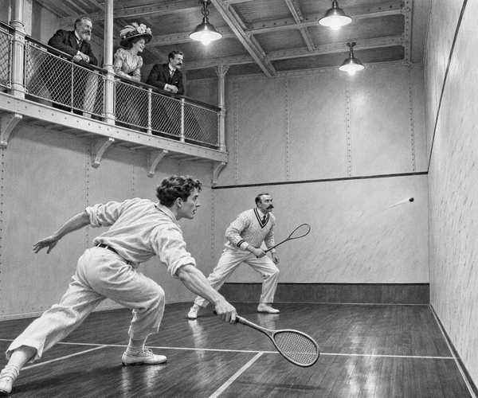

Thump!
A tiny black ball struck a grey wall.
It bounced back fast.
A man swung his racquet.
Thump!
This game was not being played in a sports club.
It was being played deep inside Titanic.
The game was called squash.
Two players took turns hitting a small rubber ball against the front wall.
Each player tried to return the ball before it bounced twice.
Game fact: Squash is played inside four walls. The little rubber ball can move very quickly after it warms up.
Titanic's court was low down on G Deck.
It was beside the ship's post office.
The court was so tall that it stretched up through two decks.
People could watch from a small gallery one level above.
There were no windows looking out at the sea.
The walls rose high around the wooden floor.
Every hit made a sharp sound.
Thump! Tap! Thump!
A young man named Fred Wright looked after the court.
He kept the racquets and balls ready.
He could also play against passengers who wanted a hard match.
Fred was Titanic's squash professional.
On the morning of 14 April 1912, a passenger called Archibald Gracie played squash with Fred.
They played before breakfast while Titanic steamed across the calm Atlantic.
Far above them were the open decks.
Far behind them were the huge boiler rooms.
Yet down on the court, the little ball kept flying.
Ship fact: Titanic also had a gym, a swimming bath and Turkish baths for first-class passengers. The squash court was one of its most unusual rooms.
Late that night, Titanic struck an iceberg.
Because the court was so low in the ship, water reached it early.
There would be no game the next morning.
Today, the court rests with Titanic on the floor of the Atlantic Ocean.
We cannot walk into it.
But old plans, photographs of Titanic's sister ship, and passengers' memories show us what it was like.
Deep inside the famous ship, there really was a court.
And once, a tiny ball went:
Thump! Tap! Thump!
1. Where was Titanic's squash court?
2. What did the players hit with their racquets?
3. Who looked after the court?